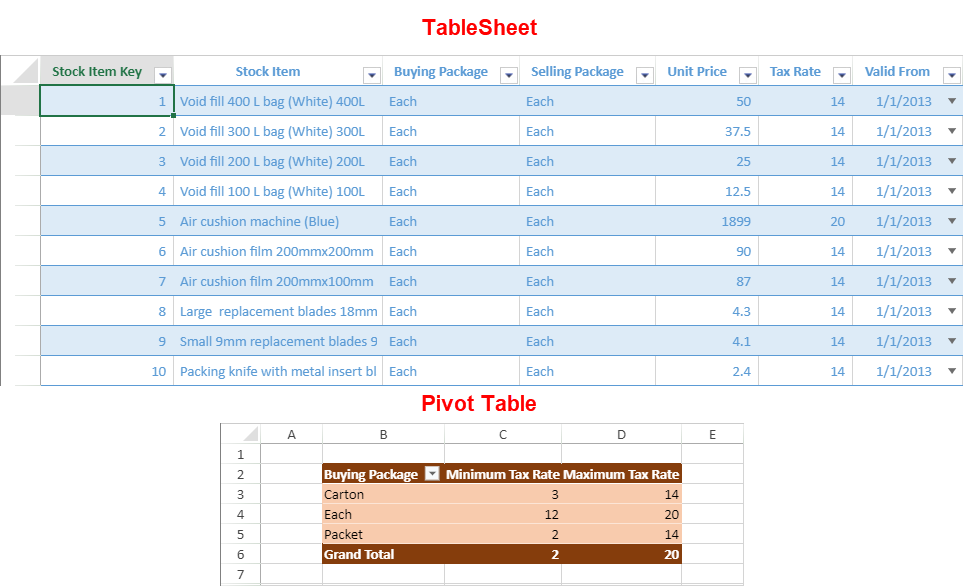

A pivot table is managed using the PivotTable and PivotTableManager classes. In order to create a pivot table, follow the below steps:
- Add data source to the project.
- Create a pivot table using add method.
- Use PivotTableFieldType enumeration to display data into various fields.
You can choose to create a pivot table using a normal data source or by using an existing tablesheet as a source.
Using JSON as a Data Source
You can create a pivot table by using JSON as a data source. For example, a food sales company sells food and beverage products across different countries and maintains sales data of products on a daily basis. By using the JSON data source, a pivot table can be created which can present meaningful insights, like:
- Total quantity of each product sold across different countries
- Total quantity of products sold for each city
A pivot table can easily categorize the sales data and calculate the subtotals and grand totals automatically as shown in the image below.

The following example code creates the pivot table and adds fields to the field area.
| C# |
Copy Code
|
|---|---|
$(document).ready(function () {
// initializing Spread
var spread = new GC.Spread.Sheets.Workbook(document.getElementById('ss'), { sheetCount: 2 });
spread.suspendPaint();
// get sheets
var pivotLayoutSheet = spread.getSheet(0);
var dataSourceSheet = spread.getSheet(1);
// set sheet name
pivotLayoutSheet.name("PivotLayout");
dataSourceSheet.name("DataSource");
// set row count
dataSourceSheet.setRowCount(245);
// set datasource
dataSourceSheet.setArray(0, 0, pivotDB_UseCase);
// add table to dataSourceSheet
dataSourceSheet.tables.add('tableSales', 0, 0, 245, 8);
spread.resumePaint();
// initialize pivottable
initPivotTable(pivotLayoutSheet);
// auto fit columns in both the sheets
autoFit(pivotLayoutSheet);
autoFit(dataSourceSheet);
});
function initPivotTable(sheet) {
// add pivottable
var myPivotTable = sheet.pivotTables.add("myPivotTable", "tableSales", 0, 0, GC.Spread.Pivot.PivotTableLayoutType.tabular, GC.Spread.Pivot.PivotTableThemes.dark3);
myPivotTable.suspendLayout();
// show rowHeader and columnHeader for PivotTable
myPivotTable.options.showRowHeader = true;
myPivotTable.options.showColumnHeader = true;
// add column fields
myPivotTable.add("Category", "Category", GC.Spread.Pivot.PivotTableFieldType.columnField);
myPivotTable.add("Product", "Product", GC.Spread.Pivot.PivotTableFieldType.columnField);
// add row fields
myPivotTable.add("Region", "Region", GC.Spread.Pivot.PivotTableFieldType.rowField);
myPivotTable.add("City", "City", GC.Spread.Pivot.PivotTableFieldType.rowField);
// add value field with SubtotalType Sum
myPivotTable.add("Quantity", "Sum of quantity", GC.Spread.Pivot.PivotTableFieldType.valueField, GC.Pivot.SubtotalType.sum);
// add filter field
myPivotTable.add("OrderDate", "OrderDate", GC.Spread.Pivot.PivotTableFieldType.filterField);
myPivotTable.resumeLayout();
return myPivotTable;
}
function autoFit(sheet) {
// auto fit columns
let columnCount = sheet.getColumnCount();
for (let i = 0; i < columnCount; i++) {
sheet.autoFitColumn(i);
}
}
|
|
Using TableSheet as a Data Source
You can create a pivot table using the tablesheet as a data source reference. It helps to easily access the data to compare and display the information in both the pivot table and tablesheet. It also allows you to add calculated fields in the pivot table from the tablesheet for better analysis of data.
The PivotTableManager.add method accepts the tablesheet name as a sourceData parameter value.
For example, the following image shows a pivot table that summarizes the stock information such as the minimum and maximum tax rates on buying packages using data from a tablesheet.

The following code sample shows how to create a pivot table using the data from an existing tablesheet in SpreadJS.
| JavaScript |
Copy Code
|
|---|---|
//init a table sheet var sheet = spread.addSheetTab(0, "TableSheet1", GC.Spread.Sheets.SheetType.tableSheet); var tableSheetName = "TableSheet1"; //bind a view to the table sheet myTable.fetch().then(function () { var view = myTable.addView("myView", [ { value: "stockItemKey", width: 150, caption: "Stock Item Key" }, { value: "stockItem", width: 120, caption: "Stock Item" }, { value: "buyingPackage", width: 120, caption: "Buying Package" }, { value: "sellingPackage", width: 120, caption: "Selling Package" }, { value: "unitPrice", width: 150, caption: "Unit Price" }, { value: "taxRate", width: 120, caption: "Tax Rate" }, { value: "validFrom", width: 200, caption: "Valid From" } ]); sheet.setDataView(view); }).then(() => { var ptSheet = spread.getSheet(0); var myPivotTable = ptSheet.pivotTables.add("pivot1", "TableSheet1", 1, 1, GC.Spread.Pivot.PivotTableLayoutType.outline, GC.Spread.Pivot.PivotTableThemes.dark3); // add row fields myPivotTable.add("buyingPackage", "Buying Package", GC.Spread.Pivot.PivotTableFieldType.rowField); // add value field with SubtotalType Minimum and maximum myPivotTable.add("taxRate", "Minimum Tax Rate", GC.Spread.Pivot.PivotTableFieldType.valueField, GC.Pivot.SubtotalType.min); myPivotTable.add("taxRate", "Maximum Tax Rate", GC.Spread.Pivot.PivotTableFieldType.valueField, GC.Pivot.SubtotalType.max); // autoFit columns for (let i = 1; i < 4; i++) { ptSheet.autoFitColumn(i); } }); |
|
The pivot table uses the data that is currently accessible in the tablesheet, except in the following instances:
- The pivot table cannot contain any newly added groups from the tablesheet after a grouping operation.
- The pivot table displays the data of a field even if it is set to hide in the tablesheet.
- The column in a pivot table uses the column name of a tablesheet and not its set caption. Thus, the calculated columns will have a very long name in the pivot table.